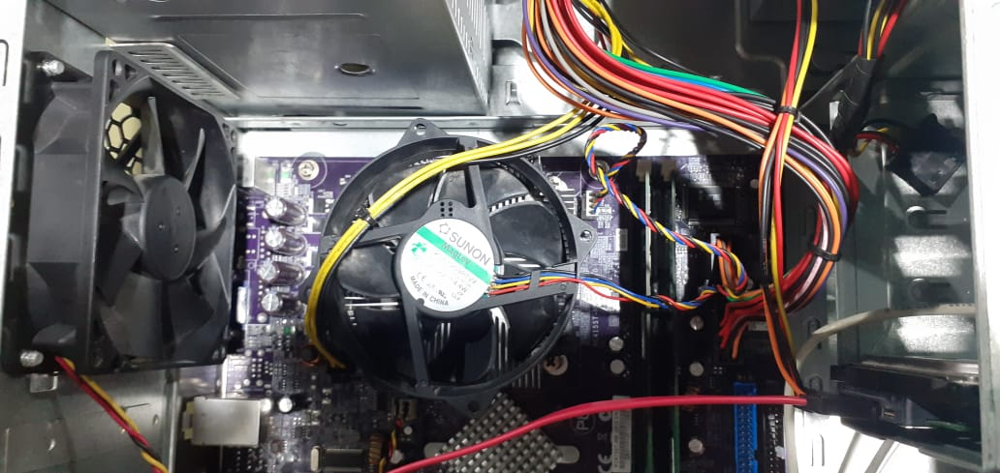
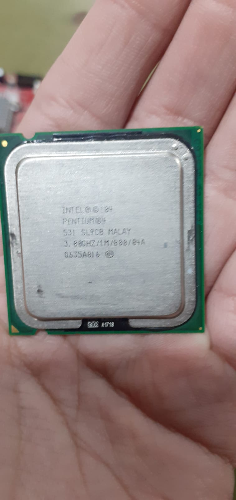
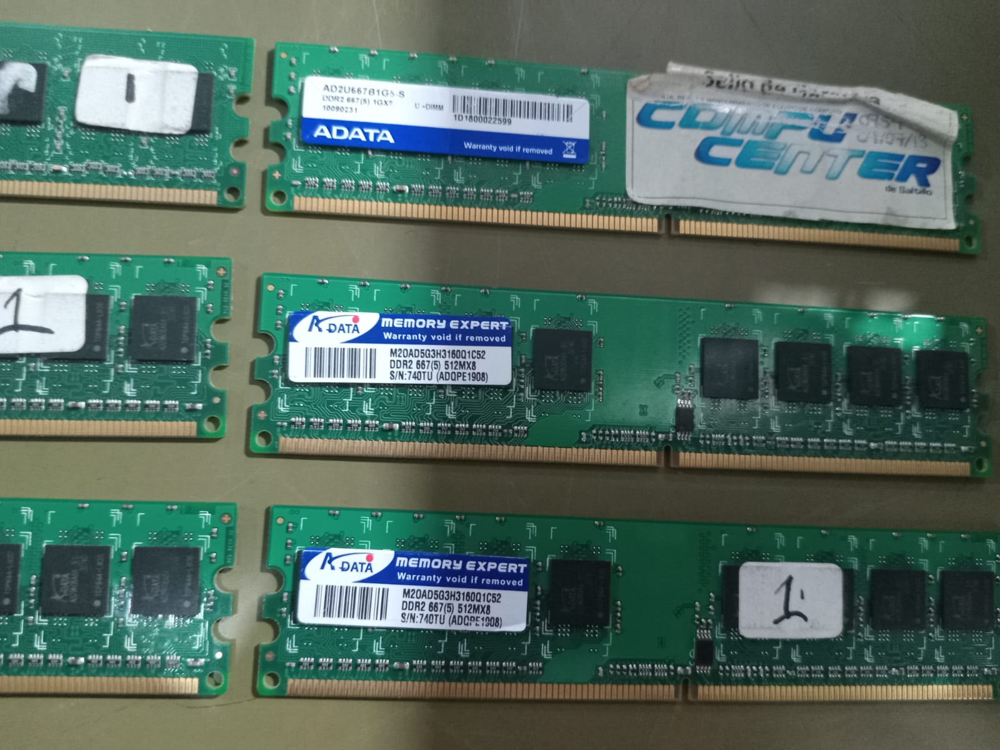
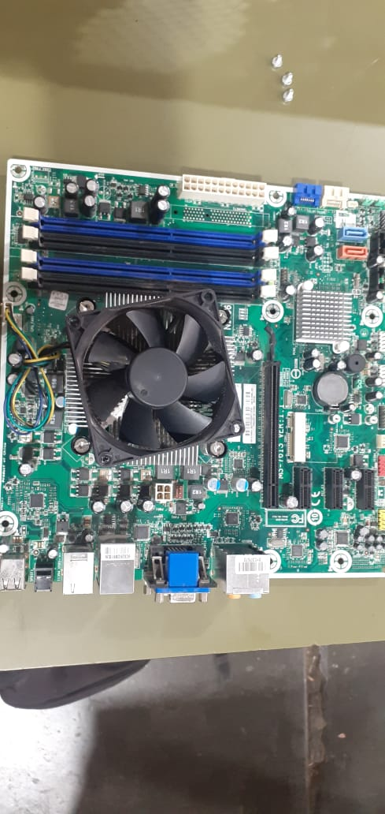
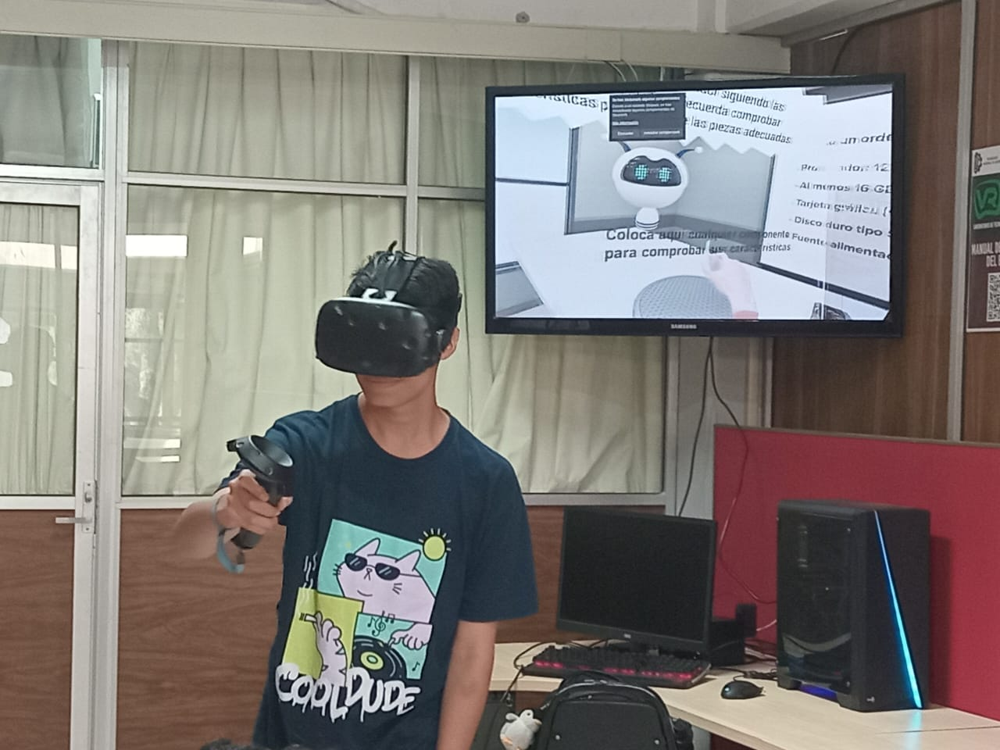

La primera practica de laboratorio consistio en que nuestro equipo desmontaria distintos equipos de computo con el fin de identificar las piezas con las que este estaba formado, ademas de su posicion y las caracteristicas de la misma PC, seguido de eso tendriamos que rearmar la computadora de tal manera que todo quedara exactamente igual a como la encontramos antes de desarmarla, entre los componentes estaba la tarjeta madre en el fondo del gabinete, memorias RAM, la fuente de poder, unidad lectora de discos, disco duro, discipador, ventilacion y el procesador. 
La segunda practica consistio en checar el procesador de 4 computadoras distintas con el fin de revisar los nucleos, los hilos y la generacion de estos, entre esas 4 computadoras, el procesador mas anticuado que pude revisar fue un intel pentium 4 y un intel pentium 3, y el mas rapido a mi parecer fue el intel dual core. (intel pentium 4) 
En la tercera practica tuvimos que verifcar entre 4 computadoras la capacidad de ram que tenia cada una de ellas, admitiendo solo ciertos tipos entre DDR2 y DDR3, 1 de esas computadores estaba averiada, por lo que solo pudimos verificar 3, 2 de esas computadoras admitian DDR2, por lo que la mayoria (por no decir todas) de las memorias RAM funcionaban en ellas, pero en la ultima que hicimos la comprobacion, solo admitia DDR3, ya que si intentabamos colocar una DDR2 en ella, esta simplemente no encajaba, entre cada memoria RAM verificabamos en el monitor la reaccion que tendria la computadora con la RAM, pues entre ellas habia tambian algunas que no funcionaban. 
En esta cuarta practica volvimos a hacer lo de la primera practica, que fue desmontar una PC, verificar sus componentes y volverla a armar, pero la complejidad fue de que esta tendira que funcionar de vuelta al momento de rearmar, para mi una de de las practicas mas interesantes, pues la practica se hacia con miedo de que dejara de funcionar, aunque lo que mas se me dificulto fue retirar el cable H1 de la tarjeta madre, lo demas fue relativamente sencillo, una vez que la pc estaba de nuevo armada, la conectabamos a un monitor junto el mouse y el teclado para revisar que todo estuviera en orden. 
En esta ultima practica nos dirijimos al laboratorio de realidad virtual, en donde nos colocamos unas gafas HTC Vive para la practica, la practica consistio en realizar un pequeño examen practico en donde completabamos distintos encargos y señalabamos las partes de la pc, asi como armar una de gamma alta, cada uno de los integrantes pasaba y realizaba esta prueba, con el fin de obtener el mejor desempeño en tiempo y el minimo de errores dentro de esta, en mi opinion la practica mas facil de las 5 realizadas. 